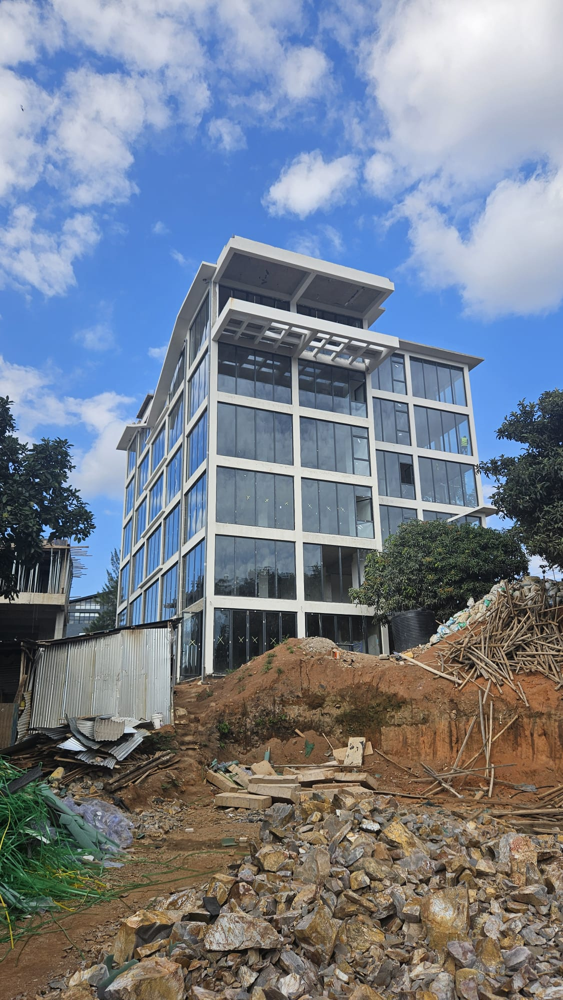

A residential street that changed. A project that can fix what changed with it.
The story of Plot 213, the street around it, and a proposal that keeps homes at the heart of Kimihurura while solving the parking, circulation and safety problems the neighbourhood already lives with. Scroll to explore.
Scroll
Part 1 · The starting point
The Rock stands in a residential zone
Phase 1 of The Rock sits on UPI 1/02/08/02/213 in Kimihurura, zoned R1A — low-density residential densification under the proposed 2026 City of Kigali zoning plan.
Through constructive discussions with the Vice Mayor and the Chief Urban Planner, we understand the City's objective clearly: the residential character of this area matters, and it must be respected. We are not asking the City to disregard the Master Plan.
The R1A zone sets a minimum residential density of 20–30 dwelling units per hectare (15–20 for mixed use) — Kigali Master Plan 2050 Zoning Regulations, Table 6.2. The Rock's residential tower helps the street actually meet it.
Part 2 · What the street has become
A street now centred on business & entertainment
15 / 37 / 52
businesses within 100 / 250 / 650 m
Of the 7 plots on our street, only one is still used purely as a residence. Around the plot: restaurants and lounges, a hotel and guesthouses, offices, a gym, spas, galleries and retail — from Lemon Kigali and OMX Hotel at one corner to the Boho block, Soy Asian Table, Glimpse Hotel, Kōzo and ruä.
Each dot is a business listed on Google Maps, July 2026.
Directly beside The Rock, plot 1/02/08/02/1563 was permitted and built to G+8 — in a zone whose regulations cap height at G+2.
We do not present this as an automatic legal precedent. But the physical reality of the street has been set: this is no longer a low-rise villa street.
Part 2 · The circulation trap
Two one-way streets. Both dead ends.
The upper and the lower street each run one way and stop. There is no loop: whoever drives in must come back out the same way.
The Rock's plot is the hinge between the two — the only place where the streets could ever be connected.
Street alignment shown schematically.
Part 2 · The consequence
Then night falls — and the street seizes up
Horns at midnight. Music from three venues at once. Cars double-parked on both sides, boxing residents into their own driveways for an hour at a time. Pedestrians thread between reversing bumpers in the dark, because there is no sidewalk left to walk on.
With two dead ends and no loop, every blocked car blocks the whole street — including, potentially, an ambulance. Residents file noise complaints; nothing structural changes. This is the street today, with or without The Rock.
Part 3 · A balanced answer
We believe the project can improve the neighbourhood, not burden it
The revised Phase 1 keeps an entire tower fully residential, while the second tower hosts professional offices, retail and restaurants. Offices are busy in the daytime and empty at night — they balance the street's evening-heavy economy instead of amplifying it. Shared parking opens to the public when the neighbourhood needs it most.
Use
Net area (m²)
% of net
Apartments
1,885.5
34.9%
Commercial / retail / F&B
1,708.4
31.6%
Offices
1,181.1
21.8%
Parking
632.0
11.7%
Total net area
5,407.0
100.0%
Housing stays
A dedicated residential tower keeps the project contributing to housing supply and to the residential density the neighbourhood plan expects.
Daytime economy
Offices generate daytime employment without reinforcing the evening traffic peak that already strains the street.
Parking for everyone
Shared parking that can also serve users of surrounding businesses during evening peak periods.

Site photo — The Rock Phase 1 under construction
Phase 1 as built to date: structure complete, façades glazed. A professionally managed, single integrated development.
Part 3 · Giving back to the street
In return for a site-specific variance, a package of neighbourhood improvements
The circulation problem is severe enough that we propose to help fix it. Subject to technical feasibility and agreement with the City, The Rock would develop:
Pedestrian link
A safe, well-lit pedestrian connection between the upper and lower streets, through the project.
One-way vehicle link
A one-way vehicular connection within Phase 1 between the two streets — subject to topographical, structural and traffic feasibility — closing the loop between two dead ends.
Street upgrades
Improvements to sidewalks, lighting, pedestrian safety, signage, parking spots and access around the project.
Part 3 · The connection
One plot can close the loop
A pedestrian and one-way vehicular connection through Phase 1 would turn two dead-end streets into a functioning circulation loop — shown schematically below.
Part 3 · Saving the upper street
The upper street gets its life back
The improvements concentrate where the pain is worst. Along the upper street: lit sidewalks so people walk safely at night, organised parking spots so cars stop improvising, signage and traffic management so the flow is ordered, and shared parking inside The Rock so visitors stop parking on the street at all.
A dead-end nuisance street becomes a safe, functioning neighbourhood street. Privately financed, publicly enjoyed.
Part 3 · What comes next
Phase 2: the expansion that multiplies the benefits
If Phase 1 can proceed, The Rock would develop Phase 2 on the adjacent plot (UPI 1/02/08/02/212): around 18 spacious two-bedroom apartments over six residential floors, ground-floor shops and offices opening onto the street, and 39 secured parking spaces on two basement levels — with double access from the 9-metre road and a planted roof terrace.
More homes toward the R1A density target, far more off-street parking, a working street: benefits beyond the boundaries of the project itself.
Go deeper
Don't take our word for it. Walk the street yourself.
Every claim on this page is a dot, a parcel or a distance on our interactive map: 50+ businesses with names and distances, the official zoning parcels straight from the City of Kigali's servers, and the three plots that decide this story.
 52 businesses mapped · official zoning parcels · 50 / 100 / 250 m rings · plots 213 · 212 · 1563
Open the interactive map
52 businesses mapped · official zoning parcels · 50 / 100 / 250 m rings · plots 213 · 212 · 1563
Open the interactive map